Before Nigeria ever had a president, the country was still tied to the British system.
When Nigeria gained independence in 1960, the British monarch was still technically the head of state, and a Nigerian official called the Governor-General represented the Queen in the country.
The real political leader at that time was the Prime Minister, Tafawa Balewa, who ran the government.
It wasn’t until 1963, when Nigeria became a republic, that the country removed the Queen as head of state and created the office of the President.
That’s when Nnamdi Azikiwe became Nigeria’s first president. At first, the role was mostly ceremonial, while the Prime Minister still held most of the power.
But becoming a republic marked Nigeria’s first major step toward fully controlling its own political system.
Nigeria's Presidents and Timeline
Nnamdi Azikiwe (1963 - 1966)
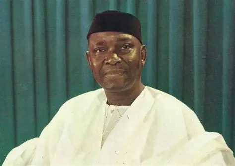
Nnamdi Azikiwe became Nigeria’s first president in 1963 when the country stopped recognizing the British monarch and became a republic.
He didn’t win a public presidential election—the position was created by the new constitution, and he was chosen because he was already a respected national leader.
His role was mostly ceremonial while the Prime Minister led the government.
Azikiwe’s time ended suddenly when a military coup in January 1966 overthrew the civilian government and dissolved the First Republic.
Major General Johnson Aguiyi-Ironsi (1966)
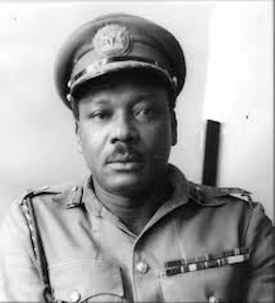
Aguiyi-Ironsi came into power after the January 1966 coup that killed key political leaders.
As the highest-ranking surviving officer, he took control to stabilize the country.
He introduced policies aimed at unifying Nigeria, but many regions felt threatened.
Just six months later, he was killed in a counter-coup in July 1966, which brought another military leader into power.
General Yakubu Gowon (1966 - 1975)
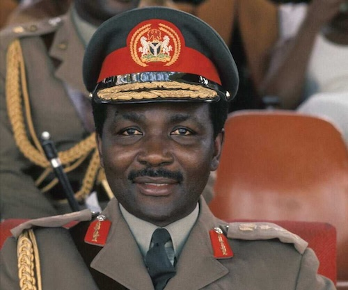
Gowon took over leadership after the July 1966 counter-coup. He led Nigeria throughout the civil war (1967–1970), working to keep the country united.
After the war, he focused on rebuilding and promoting his “No Victor, No Vanquished” policy.
Even though he had promised to return the country to civilian rule, delays led to frustration.
He was peacefully removed from office in a 1975 bloodless coup while abroad.
General Murtala Mohammed (1975 - 1976)
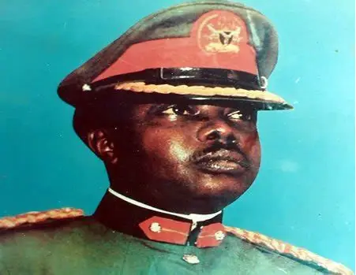
Murtala Mohammed became head of state after overthrowing Gowon in 1975.
He moved quickly with reforms—cleaning up corruption, reorganizing the government, and creating new states.
Nigerians loved his bold leadership style. Sadly, his time in office was short.
He was assassinated in February 1976 during an attempted coup.
General Olusegun Obasanjo (1976 - 1979)
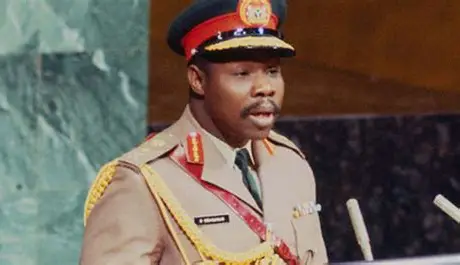
Obasanjo was Murtala Mohammed’s deputy and took over after his assassination.
Obasanjo continued Murtala’s reform agenda and pushed strongly for democratic transition.
He organized new elections and handed power to an elected civilian president in 1979—making him the first military leader to peacefully return Nigeria to democracy.
Shehu Shagari (1979 – 1983)
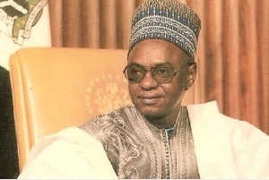
Shagari became the first civilian president under the Second Republic after winning the 1979 election.
His government focused on agriculture and housing, but it struggled with rising corruption, unemployment, and economic issues from falling oil prices.
In 1983, he won re-election but was overthrown later that year in a military coup led by Buhari.
Major General Muhammadu Buhari (1983 - 1985)
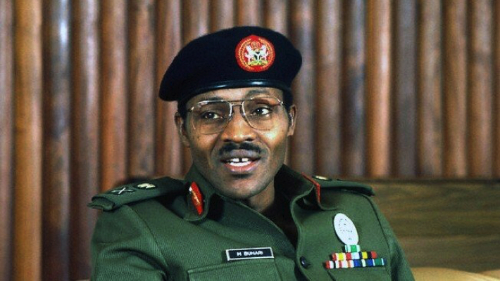
Buhari took power after overthrowing Shagari.
He ruled with a strict military style, introducing the “War Against Indiscipline” and cracking down on corruption and smuggling.
His tough approach made him popular to some and unpopular to others.
In 1985, his own military colleagues removed him in a palace coup led by Babangida.
General Ibrahim Babangida (1985 - 1993)
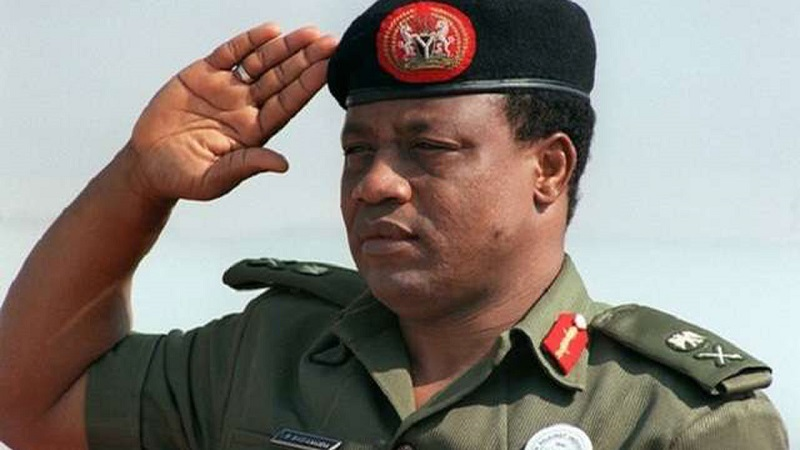
Babangida came into power after overthrowing Buhari.
He introduced economic reforms and began a long transition toward democracy.
He allowed political parties, organized elections, and created new states.
However, when the 1993 presidential election—often called the fairest in Nigeria’s history—was annulled, the country fell into crisis.
Under heavy pressure, Babangida stepped down in 1993.
Chief Ernest Shonekan (1993)
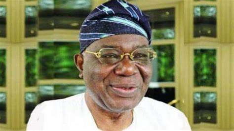
Shonekan was appointed to lead an interim national government after Babangida stepped aside.
His role was to calm the country and prepare for new elections, but his government was weak and faced protests and economic problems.
After just three months in office, he was removed in a peaceful takeover by General Sani Abacha.
General Sani Abacha (1993 - 1998)
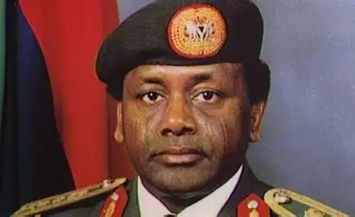
Abacha became Nigeria’s leader after removing Shonekan.
He ruled as a strict military dictator, dissolving democratic structures and tightening control over the country.
Despite his harsh rule, he stabilized the currency and built infrastructure.
His time in power ended abruptly when he died unexpectedly in 1998.
General Abdulsalami Abubakar (1998 - 1999)
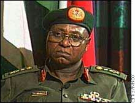
Abubakar became head of state right after Abacha’s sudden death.
He moved quickly to restore democracy by writing a new constitution and organizing national elections.
In 1999, he peacefully handed over power to an elected civilian president, helping launch the Fourth Republic.
Olusegun Obasanjo (1999 - 2007)
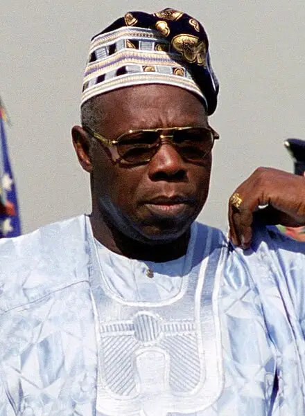
Obasanjo returned as a civilian president after winning the 1999 election, becoming the first leader of the Fourth Republic.
His government focused on rebuilding after military rule, fighting corruption, and restoring international ties.
He won a second term in 2003. Obasanjo left office in 2007 after completing his two-term limit.
Umaru Musa Yar'Adua (2007 - 2010)
Yar’Adua won the 2007 election and became president with a calm, reform-focused approach.
He started the amnesty program for Niger Delta militants and prioritized the rule of law.
Unfortunately, his health deteriorated, and he spent long periods abroad for treatment.
He died in office in 2010.
Goodluck Jonathan (2010 - 2015)
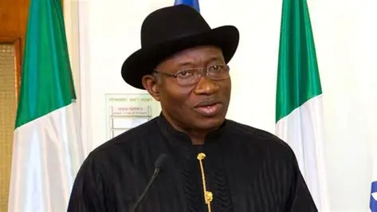
Jonathan first took office as acting president after Yar’Adua’s death, then won the 2011 election.
His government expanded universities, improved agriculture, and oversaw major growth in Nigeria’s tech and entertainment sectors.
In 2015, he lost his re-election bid to Muhammadu Buhari and became the first sitting Nigerian president to peacefully concede to the opposition.
Muhammadu Buhari (2015 - 2023)
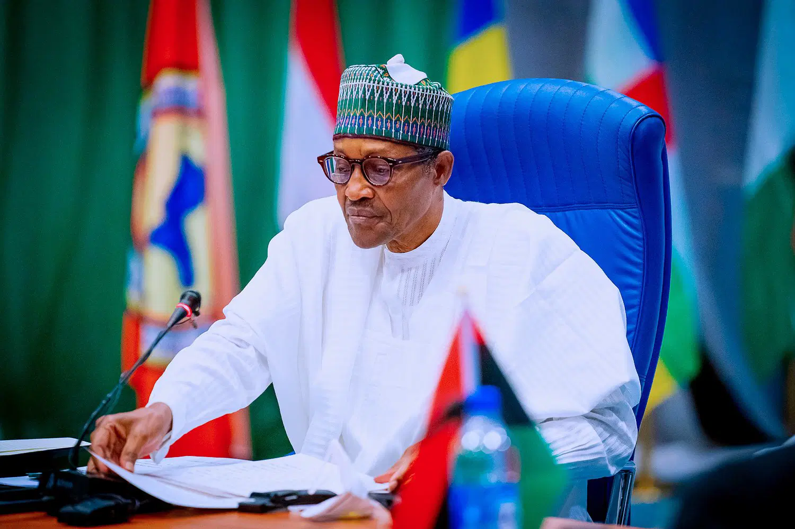
Buhari returned as a civilian and won the 2015 election, marking Nigeria’s first opposition victory.
His government focused on security, anti-corruption, and infrastructure projects.
He won a second term in 2019. He completed his two-term limit and left office in 2023.
Bola Ahmed Tinubu (2023 - present)
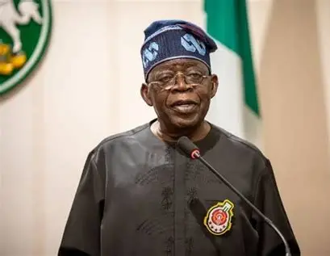
Tinubu became president after winning the 2023 general election.
His government is still in progress, focusing on economic reforms, subsidy removal, and restructuring Nigeria’s financial systems.